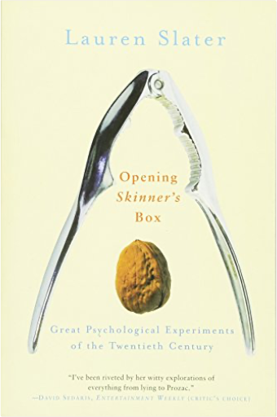
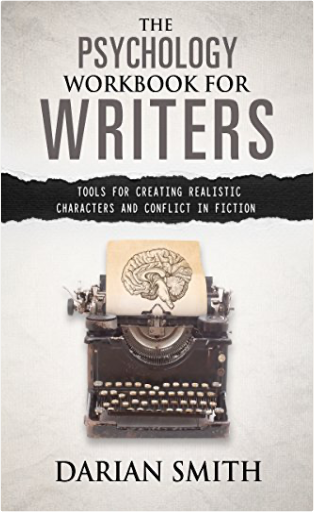
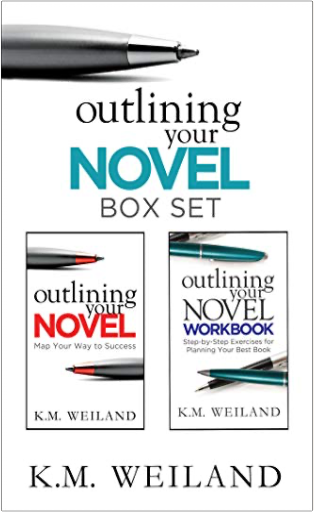
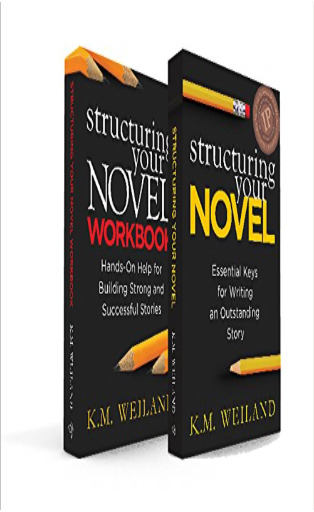

Books
6
7
8
9
10

Opening Skinner's Box: Great Psychological Experiments of the Twentieth Century
Slater, Lauren

The Psychology Workbook for Writers: Tools for Creating Realistic Characters and Conflict in Fiction
Smith, Darian
Modern Judaism: An Introduction to the Beliefs and Practices of Contemporary Judaism
Sonsino, Rifat
Reading Women: How the Great Books of Feminism Changed My Life
Staal, Stephanie
I Want to Eat Your Pancreas
Sumino, Yoru
I Want to Eat Your Pancreas
Sumino, Yoru
Fierce Femmes and Notorious Liars: A Dangerous Trans Girl's Confabulous Memoir
Thom, Kai Cheng
The Demigod's Legacy
Trent, Holley
Too Much and Never Enough: How My Family Created the World's Most Dangerous Man
Trump Ph.D., Mary L.

Outlining Your Novel Box Set: How to Write Your Best Book
Weiland, K.M.

Structuring Your Novel Box Set: How to Write Solid Stories That Sell
Weiland, K.M.
1,000 Creative Writing Prompts to Unstick Your Brain - Volume 1: 1,000 Creative writing prompts to end writer’s block and improve your writing skills for stories, poetry, screenplays, and blogs
Weiss, Bill
6
7
8
9
10


 Made with Delicious Library Made with Delicious Library
Made with Delicious Library Made with Delicious Library